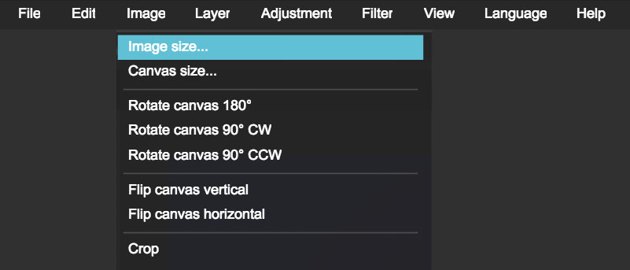
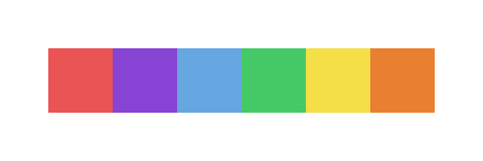
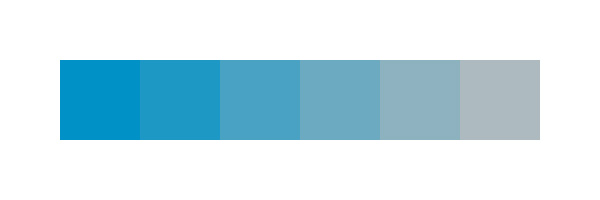

Design & CSS
Working with Images
Cropping and Saving Images
When working with (raster) images and photos resize or crop the image to the largest size you need.
Save your images in one of the following compressed file formats to keep file size low:
- .jpg - for photographs with rich detail
- .png - for images with transparent or opaque backgrounds
Image editors
You will need an image editor tool to crop and edit your images. Adobe Photoshop and Sketch are popular options but Pixlr is also a great free alternative.
 In Pixlr (and in most image editors), use the crop tool in the toolbar to crop your images.
In Pixlr (and in most image editors), use the crop tool in the toolbar to crop your images.
Then, go to Image → Image Size… to resize your images. Make sure “Constrain Proportions” is checked to maintain proper image proportions.

EXERCISE: Resizing Images
Using Pixlr, practice cropping and resizing images. Use your own images, or choose from a number of placeholder sites or stock photography sites listed in the below resource links.
Bonus: Check out some of the other menu options to familiarize yourself with the tool.
Image resources
EXERCISE: Choosing fonts
Choose one or two fonts for your website from Google Fonts to use for next class.
Define a style for your headlines, paragraph and navigation menu with your chosen fonts. Experiment with different styles, weights, and sizes.
Color
Terminology
Hue is what we think of when we think about color. It is the characteristic that makes a color unique.

Saturation refers to how weak or strong the color is.

Value refers to the lightness or darkness of a color. Think about it as adding white (lightness) or black (darkness) to a color.

RGB vs CMYK
RGB
- stands for red, green, blue
- additive color system that is based on adding light
- used to specify colors for the web.
CMYK
- cyan, magenta, yellow and black
- subtractive color system that is based on ink printing
- used to specify colors for print.

You can specify RGB colors on the web using the rgb(#,#,#) format in CSS (where # is a value between 0 and 255) or with the Hex color code such as #FFFFFF.
p {
color: #FFFFFF;
/* or */
color: rgb(255, 255, 255);
}
Designing with Color
A good design should work in the absence of color and should communicate clearly in black and white. But color is a valuable tool and can be used:
- to add meaning and evoke emotions
- to distinguish between different pieces of content
- to indicate the state of interactive elements
- add harmony and rhythm to your design
Below are some items to consider when choosing colors.
Personality and Meaning
Choose colors that reflect your personality or your brand. Consider the emotional responses of your target audience. Color communicates meaning. That meaning can vary across different cultures so it’s important to consider your target audience and how they perceive certain colors.
Also, think about how your audience will interact with your page. Use color to distinguish between elements and interactive states. For example, you might choose a default color for your navigation elements and a “selected” color.
Read more about color meaning and how to use color to enhance your designs here.
Harmony and Rhythm
Color can be used to attract attention and organize content, creating a visual hierarchy. Repeating colors on elements adds clarity by allowing the viewer to make visual connections between pieces of content.
Less is More
Consider the number of colors to use in your design. Color helps to reinforce your message and guide people throughout your design. Choosing too many colors may confuse people. When in doubt use one primary color and a secondary accent color. Vary the saturation and value of your colors to add variety while maintaining clarity.
Color Accessibility
It’s important to consider accessibility. Many people have some sort of visual color impairment such as being unable to distinguish certain colors from others. Remember that your design should work in the absence of color. Ensure sufficient contrast between colors to help people distinguish between different pieces of content. Use a variety of values and levels of saturation to add contrast.
Read more about color blindness and how to design for color accessibility here.
Color Resources
- Adobe Color CC - tool to help you choose color palettes
- Color Safe - helps you choose colors with appropriate contrast for text
- ColorZilla - Chrome & Firefox plugin to help you pick colors from websites
EXERCISE: Choosing colors
Choose up to 2 colors for your website and define how they will be used.
Brand Identity
Your website is a reflection of you and/or your business. Your website is is part of your brand.
Your brand is how you are perceived by your audience.
Your logo is the visual expression of who you are to your audience.
Your brand identity is a consistent set of artifacts that tell people who you are.
The fonts and colors you choose for your website becomes part of your brand identity. These can be carried through to the rest of your brand and serves as a foundation for your brand style guide.
A style guide defines the visual identity for you or your brand across all print and digital collateral.
Examples of brand style guides
In web design, a style tile is used in much the same way as a style guide except that it defines styles that are specific to your website.
Examples of style tiles


Keep track of the different styles you use in a style guide or style tile. Use it as a reference as you build out your website and your brand collateral to maintain consistency and clarity.
Typography & CSS
Last class we covered the role of typography in design. Let’s go over how to implement these principles into your web pages using various CSS properties.
color
Use the color property to change the colour of your text. We talked about how to set the colour for background styles in Module 1. Use the same value types (hex, keyword or rgb) for this property as well.
/* all the same colour */
body {
color: firebrick;
color: rgb(178,34,34);
color: #B22222;
}
Length / Measurement Units
The properties that affect the sizing of an element uses various measurement units. Here are some commonly used units for the web:
- pixels (
px) - most commonly used because computer monitors and mobile devices are measured in pixels.- must use whole numbers (e.g.
12px)
- must use whole numbers (e.g.
- percentages (
%) - useful for fluid and responsive layouts- can use any number (e.g.
20%,25.5%)
- can use any number (e.g.
- ems (
em) - originally a typographic measurement based on the letter “M”- relative unit, sizing is based on parent & ancestor elements sizes
- can use any number (e.g.
1em,1.275em)
- rems (
rem)- stands for “relative em”- relative unit like
embut is only relative to the root element (htmltag)
- relative unit like
By default, with no other CSS, here’s how these units compare to each other:
1em = 1rem = 16px = 100%
There are also other measurement units used for print and new experimental units that are not yet supported in all browsers.
Let’s look at how em and rem works.
See the Pen font-size, em & rem by Ladies Learning Code (@learningcode) on CodePen.
Extra resources
- rem & the 62.5% method
- CSS - Measurement Units
- W3C - Units of length: px, em, cm, etc.
- CSS Tricks - Lengths of CSS
- Understanding and Using rem Units in CSS
font-size & line-height
The default size of HTML text in the browser is equivalent to 16 pixels, with the headings getting progressively bigger or smaller based on their hierarchy.
Use font-size to change the size and line-height to adjust the space between lines of text.
You can use any of the measurement units to declare the font-size. For line-height, this property actually does not require the use of measurement units and works better without it.
p {
font-size: 20px;
line-height: 25px; /* fixed size */
}
p {
font-size: 20px;
line-height: 1.5; /* relative to font-size */
}
text-shadow
Use this property to apply a shadow to your text.
p {
text-shadow: 2px 4px 1px red;
}
Text shadow!
- first value - x-coordinate, horizontal distance of the shadow
- positive numbers places the shadow to the right
- negative numbers places the shadow to the left
- second value - y-coordinate, vertical distance
- positive numbers places the shadow below the text
- negative numbers places the shadow above the text
- third value - blur radius (optional), the higher the number, the bigger the blur
- fourth value - color of the shadow
To use multiple text shadows, separate each grouping with a comma.
p {
text-shadow: 1px 1px 1px #000,
5px 5px 5px red;
}
See the Pen font-size, line-height, text-shadow by Ladies Learning Code (@learningcode) on CodePen.
Custom fonts (Google, External and Icon fonts)
Icon fonts
Icon fonts are an easy way to add imagery to your web page but still have the flexibility of styling properties like size and colour using CSS since they are fonts!
There’s many to choose from but Font Awesome is a great option. Similar to Google Fonts, to use Font Awesome, just link to their CSS file.
Under Get Started, there are different options for adding the font files. You can download the CSS file and add it to your project files or use their CDN (Content Delivery Network - files hosted online).
Pro tip! When using CDNs, they are sometimes listed like this:
<link href="//maxcdn.bootstrapcdn.com/font-awesome/4.4.0/css/font-awesome.min.css">
Remember to add the “http” to make it work when you run your page “locally” (on your computer) without a local server.
<link href="http://maxcdn.bootstrapcdn.com/font-awesome/4.4.0/css/font-awesome.min.css">
To use, pick an icon and copy the supplied markup and class and add it to your HTML.
Resources
- https://css-tricks.com/html-for-icon-font-usage/
- http://weloveiconfonts.com/
- http://reference.sitepoint.com/css/typography
EXERCISE: Typography
Download the exercise file here. Open typography.html in your editor and follow the instructions listed in the comments in the
<head>of the page.Answer key (zip file).
Pro tip! Move this exercise file from your downloads folder and add it somewhere you can find it. (e.g. organized with the rest of your LLC project/exercise files)
Adding/Removing Space
Using space is a key part in design to ensure that the content is easy to read, view, find and aesthically pleasing. Sometimes a few pixels can make all the difference!
The browser looks at every HTML element on the page as a rectangular box. The CSS Box Model describes the way CSS styles the size and spacing of HTML elements.
CSS uses 5 properties to determine the size and spacing of these boxes: width, height, padding, margin and border. Today, let’s look at padding and margin. (We’ll continue with these other properties in the next lesson.)
Padding
The padding property adds/removes space inside of the element. It only accepts positive numerical values.
Setting the padding to “0” will remove any default space on an HTML element. Any positive value will add space inside of the element.
/* longhand */
padding-top: 2px;
padding-right: 2px;
padding-bottom: 2px;
padding-left: 2px;
/* shorthand */
padding: 2px 2px 2px 2px; /* top right bottom left */
The shorthand technique can be shortened even further.
padding: 2px; /* same on all sides */
padding: 2px 10px; /* top & bottom, right & left */
padding: 2px 10px 5px; /* top, right & left, bottom */
Margin
Margin adds/removes space outside of an element. However, the shorthand and longhand rules are the same as padding. Margin also accepts negative values.
/* longhand */
margin-top: 2px;
margin-right: 2px;
margin-bottom: 2px;
margin-left: 2px;
/* shorthand */
margin: 2px; /* same on all sides */
margin: 2px 10px; /* top & bottom, right & left */
margin: 2px 10px 5px; /* top, right & left, bottom */
margin: 2px 2px 2px 2px; /* top right bottom left */
See the Pen margin & padding by Ladies Learning Code (@learningcode) on CodePen.
Dev tools & designing in the browser
Getting to know your browser dev tools will be super handy when tweaking styles on your web page. You’ll be able to try out different CSS styles right in the browser and see the changes update right away rather than flipping back and forth between your editor and browser.
It’s also useful for finding the correct css selectors faster than hunting through your files (or someone else’s).

In Chrome, you can access the tools in 3 ways:
- Option 1: right-click / two-finger tap / Ctrl + click on any web page and select Inspect Element to open the console
- Option 2: select the menu icon in the top right hand corner and select More Tools > Developer Tools
- Option 3: keyboard shortcut: Ctrl + Shift + I (PC) / Cmnd + Option + I (Mac)
Pick your favorite website and try it out!
EXERCISE: Margin & Padding
Download the exercise file (zip file). In groups of two or three, try to find a good balance of margin and padding to make this web page look just a little bit nicer!
Intro to form design
When design a form, there are many things to consider such as:
- space, padding and layout
- icons and typography
- simplicity & ease of use
- displaying validation error
- form steps and progress
- primary and secondary buttons
With these considerations in mind, let’s look at some of the rules listed in this article, The 10 Commandments of Good Form Design on the Web.
~ End ~